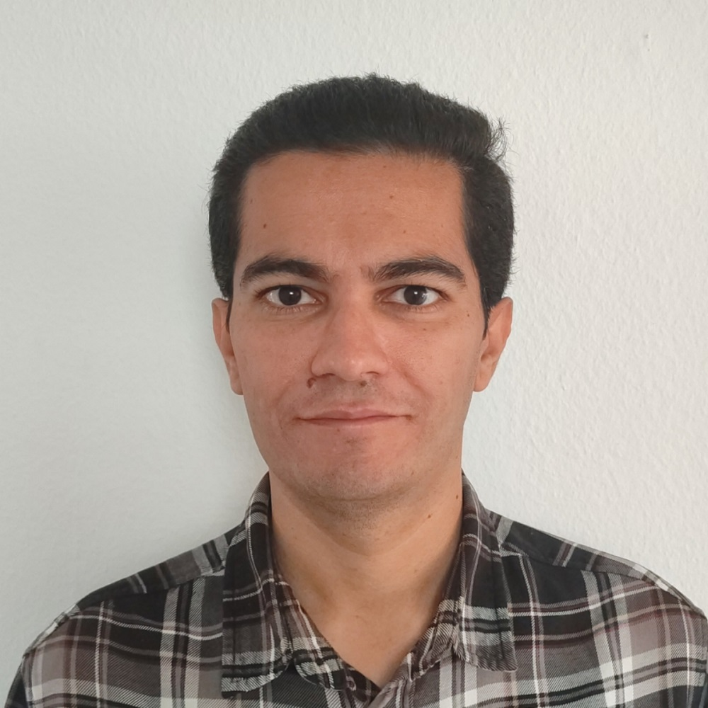

Amirhossein Bayani

Summary
I am a Junior Software Developer holding a Diploma in Full Stack Software Development from the Code Institute.
Skilled in HTML, CSS, Javascript, Python, Django, and Predictive Analytics, I bring a decade of experience in
material modeling and simulation. With strong communication skills and effective problem-solving abilities, I
thrive as a valuable team player. I am enthusiastic about joining the tech industry, seeking an opportunity
within an exciting development team where I can both develop and contribute.
Education
- August 2023–March 2024; Diploma in Full Stack Software Development
Code Institute - Dublin, Ireland -
(Credit Rated by University of West of Scotland)
- September 2014–September 2017; PhD in Nanotechnology Engineering
Kashan University, Iran
- September 2010–January 2013; Master of Physics (Solid State Physics)
Ferdowsi University of Mashhad, Mashhad, Iran
- September 2006–August 2010; Bachelor of Physics
Ferdowsi University of Mashhad, Mashhad, Iran
Work Experience
- July 2021 - July 2023 Scientific Researcher
Fraunhofer Institute for Mechanics of
Materials IWM, Freiburg, Germany
- Computational modelling of surface and interface of Perovskite Solar Cell and electron/hole
transport layers using density functional theory (DFT) and method beyond DFT
- Studying the point defects in semiconductors and Perovskite materials
- September 2018 - September 2020 Postdoc Researcher
Angstrom Lab, Uppsala University, Uppsala, Sweden
- Simulation of Au intercalation on SiC/Graphene using DFT
- Studying the spin-orbit coupling effect on Graphene/Au
Skills
- Technologies: HTML5, CSS3, JavaScript, Python
- Databases: MySQL, Postgres
- Machine Learning: Numpy, Pandas, Seaborn, Matplotlib, Regression, Tensorflow, SciKit Learn,
Convolutional neural network (CNN)
- Frameworks: Django, jQuery, Bootstrap
- Version Control: Git, Github
- Workspace: Vscode, Codeanywhere, Gitpod
- Cloud Deployment: Heroku app
- Data Visualization: Streamlit app
Languages
- English: Advanced level
- Persian: Mother Tongue
- German: Basic level
Diploma
- Diploma in Full Stack Software Development (Predictive Analytics) from: Code
Institute
Other